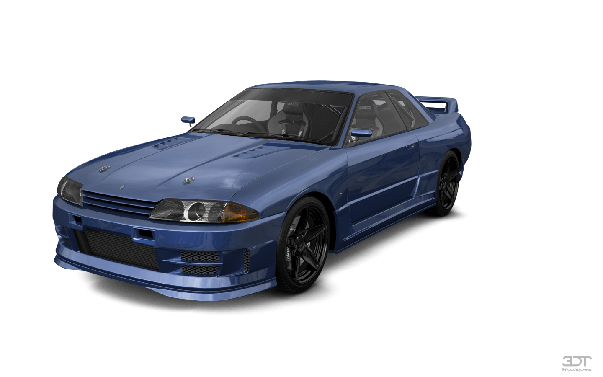

Nissan Skyline GTR
The GTR was made between 1989 - 2002 over 3 generations of cars. The R32, R33 and R34. They were all powered by a 2.6L turboed inline 6 called the RB26DET. they all came in manual. But the R34 had a 6 speed instead of a 5 speed. They all weighed about 1500KG. The reason the GTR is so popular is because in 1989 the R32 dominated the Japanese touring car championship, it won 29 races from 29 starts and won the championsip 5 years in a row